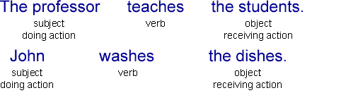
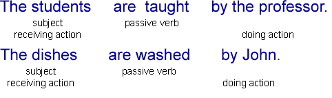

Active / Passive Verb Forms
{kind=link}
Sentences can be active or passive. Therefore, tenses also have "active forms" and "passive forms." You must learn to recognize the difference to successfully speak English.
Active Form
In active sentences, the thing doing the action is the subject of the sentence and the thing receiving the action is the object. Most sentences are active.
[Thing doing action] + [verb] + [thing receiving action]
Examples:

Passive Form
In passive sentences, the thing receiving the action is the subject of the sentence and the thing doing the action is optionally included near the end of the sentence. You can use the passive form if you think that the thing receiving the action is more important or should be emphasized. You can also use the passive form if you do not know who is doing the action or if you do not want to mention who is doing the action.
[Thing receiving action] + [be] + [past participle of verb] + [by] + [thing doing action]
Examples:

Active / Passive Overview
| Tense | Active | Passive |
| Simple Present | Once a week, Tom cleans the house. |
Once a week, the house is cleaned by Tom. |
| Present Continuous | Right now,
Sarah is writing the letter. |
Right now,
the letter is being written by Sarah. |
| Simple Past | Sam repaired the car. |
The car was repaired by Sam. |
| Past Continuous | The salesman was helping the customer when the thief came into the store. |
The customer was being helped by the salesman when the thief came into the store. |
| Present Perfect | Many tourists have visited that castle. |
That castle has been visited by many tourists. |
| Present Perfect Continuous | Recently, John has been doing the work. |
Recently, the work has been being done by John. |
| Past Perfect | George had repaired many cars before he received his mechanic's license. |
Many cars had been repaired by George before he received his mechanic's license. |
| Past Perfect Continuous | Chef Jones had been preparing the restaurant's fantastic dinners for two years before he moved to Paris. |
The restaurant's fantastic dinners had been being prepared by Chef Jones for two years before he moved to Paris. |
| Simple Future will |
Someone will finish the work by 5:00 PM. |
The work will be finished by 5:00 PM. |
| Simple Future be going to |
Sally is going to make a beautiful dinner tonight. |
A beautiful dinner is going to be made by Sally tonight. |
| Future Continuous will |
At 8:00 PM tonight, John will be washing the dishes. |
At 8:00 PM tonight, the dishes will be being washed by John. |
| Future Continuous be going to |
At 8:00 PM tonight, John is going to be washing the dishes. |
At 8:00 PM tonight, the dishes are going to be being washed by John. |
| Future Perfect will |
They will have completed the project before the deadline. |
The project will have been completed before the deadline. |
| Future Perfect be going to |
They are going to have completed the project before the deadline. |
The project is going to have been completed before the deadline. |
| Future Perfect Continuous will |
The famous artist will have been painting the mural for over six months by the time it is finished. |
The mural will have been being painted by the famous artist for over six months by the time it is finished. |
| Future Perfect Continuous be going to |
The famous artist is going to have been painting the mural for over six months by the time it is finished. |
The mural is going to have been being painted by the famous artist for over six months by the time it is finished. |
| Used to | Jerry used to pay the bills. |
The bills used to be paid by Jerry. |
| Would Always | My mother would always make the pies. |
The pies would always be made by my mother. |
| Future in the Past Would |
I knew John would finish the work by 5:00 PM. |
I knew the work would be finished by 5:00 PM. |
| Future in the Past Was Going to |
I thought Sally was going to make a beautiful dinner tonight. |
I thought a beautiful dinner was going to be made by Sally tonight. |